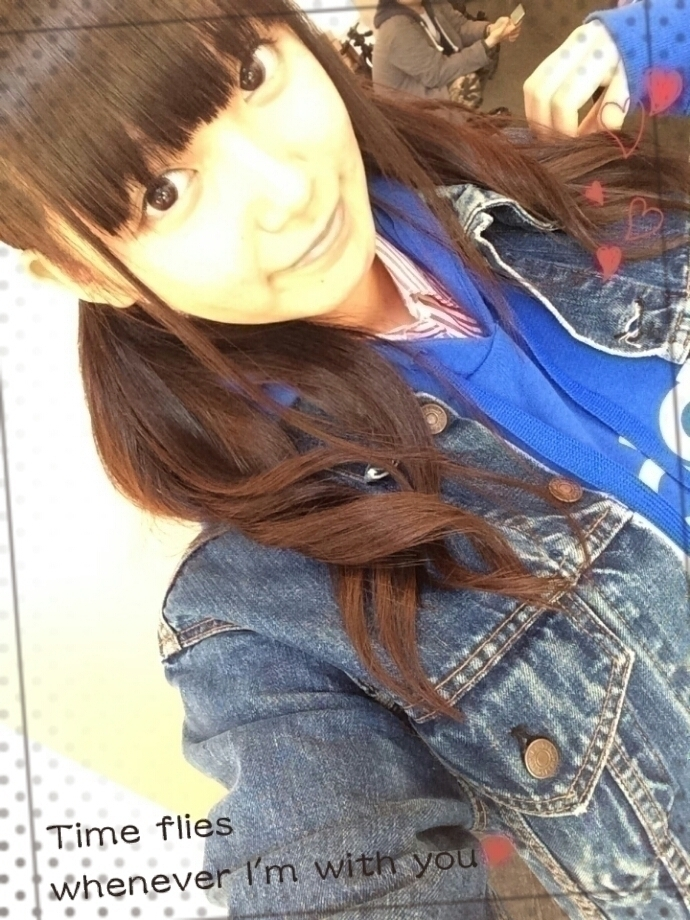
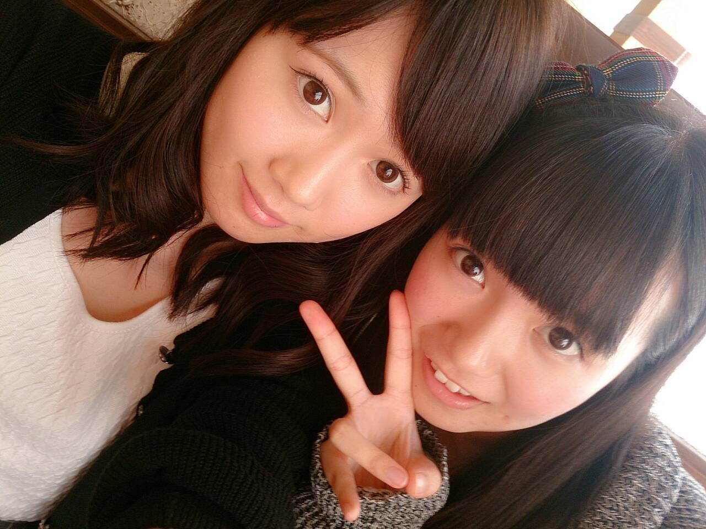
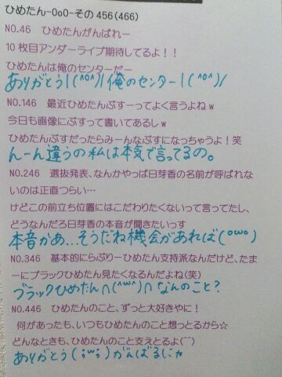

| 2014/10 26 Sun | ひめたん-OoO-その492 |
めざましテレビpresents T-SPOOK
～TOKYO HALLOWEEN PARTY～
に出演させていただきました\( ˆoˆ )/
パレードの衣装

れりご～れりご～
とある雪の女王風ワンピース
三つ編みもしたんだよ
∋∞(⁘˙ỏ˙⁘)∞∈
＼ れりご～ ／
∋∞ (⁘˙ỏ˙⁘) ∞∈
歌衣装

ロリータワンピース × 血 ( º∀º )･∵.
血糊だよ( º∀º )･∵.
りぼんおっきいっしょー
さすがひめたんって褒められたよ♡
パレードは
フジテレビの周りを
みんなで練り歩きしました❁
遊びに来てくださったみなさんも
仮装しててステキだった(´pωq`)
ライブでは主にまいまいのポジションで
踊ることが多かった～
乃木坂の出番はラスト
このハロウィンイベントのクライマックスを
任せていただきました(；ω；)
みなさんと一緒に楽しい時間が過ごせて
ステキなハロウィンになりました♪
来てくださったみなさんも
応援してくださったみなさんも
本当にありがとうございました！
このお仕事をしてると毎年
ハロウィン来るのほんとに楽しみなんだ～
みなさんも学校や会社で
賑やかなハロウィンパーティーして
楽しんでね乁( ˙o˙ 乁)♡
SamuraiELO

テーマはボーイズ風ファッション。
普段の雰囲気とは違った感じで
ジーンズなんて着ちゃってますよ☆
男性にして欲しいファッションとか
語っちゃったりしてるので
チェックして欲しいなって思っちゃったり
(↑口調がいちいち面倒くせえ奴)
でもほんとに、こんなひめたん
なかなか見れないよ～
他にも乃木坂ちゃん
たくさん載ってて楽しいよ～
まいやん表紙が目印だよ！

らりんに遊んでもらったの(っ´ω`c)♡
映画観て、ごはん食べて、
お買い物して、夜景も見たの！
幸せな1日だった❁
メンバーとお仕事を忘れて遊ぶの
そういえば久々だったなあ～
らりんはひめのお姉ちゃん♡
ありがとう！
ごはんごちそうさまでした～♪

 ひめたんの
ひめたんの
オススメのプリンはなんですか？
チョコレートプリン！
他に美味しいとこ知ってるひと教えて～
全力でチェックします\( ˆoˆ )/
ひめたんが1番好きな季節は何ですか？
春ですね、一番苦手なのは夏です
暑いからってよりも冷房が苦手なの
夏場でもクーラーは30℃が丁度いい。
最近勉強伸び悩んでるんですが
どうしたらひめかさんみたいに
頭良......（葛藤）なれますかね？
大丈夫、心配しなくても
ひめたんは地頭いいからね( ´_ゝ`)
安心してひめかさんみたいに
頭良......
ひめたんは街中とかで､
『ん!これは腹減るだ～ろ』
って､匂いは何かな?
質問とちょっと反れるけど
この前ね、街歩いてたらいきなり
地元にあったコロッケ屋さんの香りがして
お腹も空いたし
なんだか懐かしい気持ちになった\❁/
ひめたん、寝てる時に足が
"ビクン"ってなって飛び起きちゃう時ある？
あーこれわかる！
というか頻繁に起こる時期がある！！
何なんだろうね(´・ω・｀)？
目覚める時どきどきするよね
インドカレーかけたらどうなるの？
前回の醤油のノリだよねってことは
私に、ですか(；ω；)
私を何だと思ってるの(；ω；)
ひめたんの日記の
コメント欄下２ケタに46を踏んだ方へ
手書きでコメ返するコーナー
＼ ひめたん46 ／


いつもたくさんのコメント
ありがとうございます
そういえばハロウィン本番近いけど
みんなはどんなふうに過ごすの？
ひめたんのハロウィンは
散々日記でみんなに報告したから
逆にみんなのハロウィンプラン聞きたい♡
(＊´・ω・＊)
コメント(646)
2014/10/26 23:36